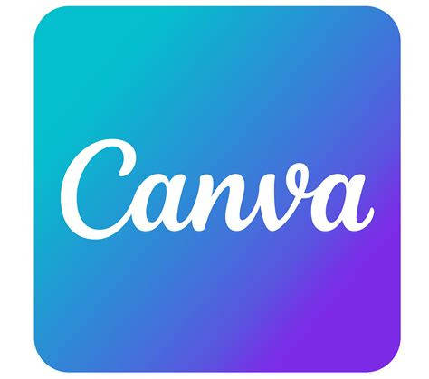
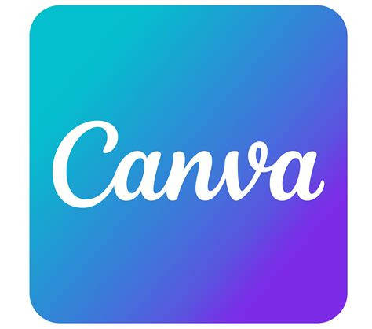

Bonjour !
Je suis Pauline Drouvin 👋
Je suis ingénieure écologue en reconversion dans le développement web !
J'ai acquis les bases de programmation grâce à la "Nurserie Numérique". 💻
Je continue de me former en ligne en parallèle de ma recherche d'alternance pour compléter
mes connaissances de bases. J'ai hâte d'échanger avec vous pour de nouvelles opportunités !
06 24 67 25 46
pauline.drvn@hotmail.com
Nieppe - 59850
Anglais B2
Ma Formation
Nurserie Numérique - Lille - Octobre 2023
- Apprentissage des bases de programmation
- Découverte de la méthode de gestion de projet Scrum
Master Ecologie et Restauration des Milieux Dégradés - Lille - 2017
- Analyse de données avec langage R et SQL
Mes expériences professionnelles
Ecologue - Entime - Armentières - Septembre 2022
Dianostic de milieux naturels et Cartographies
Chargée de mission biodiversité - ORB HDF - Bailleul - Mai 2021 à Janvier 2022
Evaluation des indicateurs de biodiversité régionale
Chargée d'études - Eco'Logic - Lille - Avril 2020 à Octobre 2020
Inventaires et Cartographies pour la Trame Verte et Bleue de Roubaix
Assistante doctorante CNRS - Lille - Octobre à Décembre 2018 & Avril à Mai 2019
Réalisation des protocoles et analyses de données sous R
Mes Soft Skills
- Travail d'équipe
- Créativité
- Curiosité
- Apprentissage collectif
Mes compétences numériques


 

Mes loisirs
- Photographie naturaliste: 3 ans
- Lecture fantasy, dystopie et mythologie
- Yoga : 2 ans